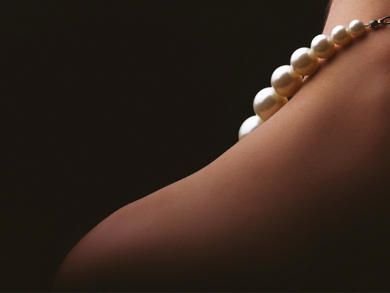

|
400-123-4567 13800000000 |
|
400-123-4567 13800000000 |
广州珠宝首饰展：真材实料看得见
2019-02-13 15:42:11
据珠宝首饰展组委会有关负责人介绍，本届珠宝首饰展展出面积逾5万平方米，吸引了来自全球30多个国家2000多家展商参展，在原有的品牌展区、国际彩宝展区、独立设计师展区、中国香港/台湾展区、精品玉石展区、国际矿物宝石展区的特色展区基础上新增更多特色展区，为珠宝业内外参观者带来全新的珠宝享受。

波兰是琥珀储量最多的国家之一，加工水准也被公认为最高。波兰展团带来了大量工艺精美的琥珀。据参展商介绍，波兰琥珀质地很轻、温润如玉，在1:4比例的盐水中能够浮起，用力摩擦会散发出怡人的松香味。记者注意到，波兰琥珀的现场售价实惠，有很多观众购买，有买主表示，现在国内琥珀市场存在不少造假的情况，在展会上购买一是质量有保障，二是波兰琥珀确实比其他产地琥珀质量要高。
翡翠历来是珠宝展的重头戏，众多玉器加工商展出了大量高档翡翠饰品。翡翠配以金银制作成飞鸟、花开等图案，寓意清风盈袖，明月入怀、花开富贵、开枝散叶，吸引了众多观众。一位设计师介绍，设计翡翠饰品首先要分清什么是高档翡翠，只有完全具备“水、种、色、气”才属于高档品，设计时要结合翡翠天然的特质。有参展商表示，近些年随着网络购物的兴起，越来越多的消费者选择网络渠道购买翡翠，导致很多黑心商贩用各种手段处理过的B货、C货，甚至是D货冒充A货卖，给实体店带来了不小的冲击。
在展会现场，记者还看到了很多揭阳玉，参展商均可根据观众需求制作玉器。据悉，揭阳虽有亚洲玉都的美名，但并不产玉，主要是加工精良，具有集玉器生产加工、贸易于一体的玉器产业链，国内的中、高档翡翠玉器90%出自揭阳。
除了琳琅满目的珠宝，现场还展出了恐龙蛋化石。据参展商介绍，恐龙蛋化石主要用于收藏和科研，一般的恐龙蛋化石仅剩下蛋壳，市场售价通常为几百元，长出晶体的恐龙蛋化石价值高些，市场售价在上千元，含有胚胎的恐龙蛋价值最高，也最罕见，市场售价通常在10万元之上。
展出的同样具有科研价值的还有石陨。据参展商介绍，铁含量在30%以下的为石质陨石，铁含量在50%左右的为石铁陨石，铁含量在90%以上的为铁陨石，铁含量越高价值也就越高，其中石铁陨石切开后十分美观，装饰价值很大。